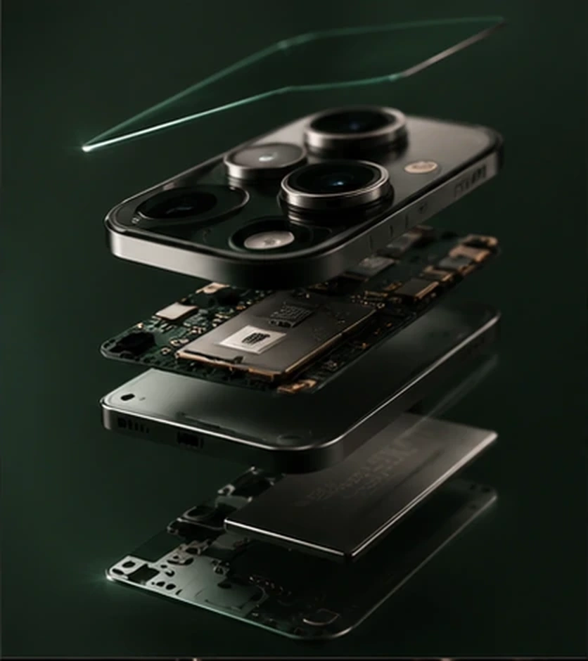
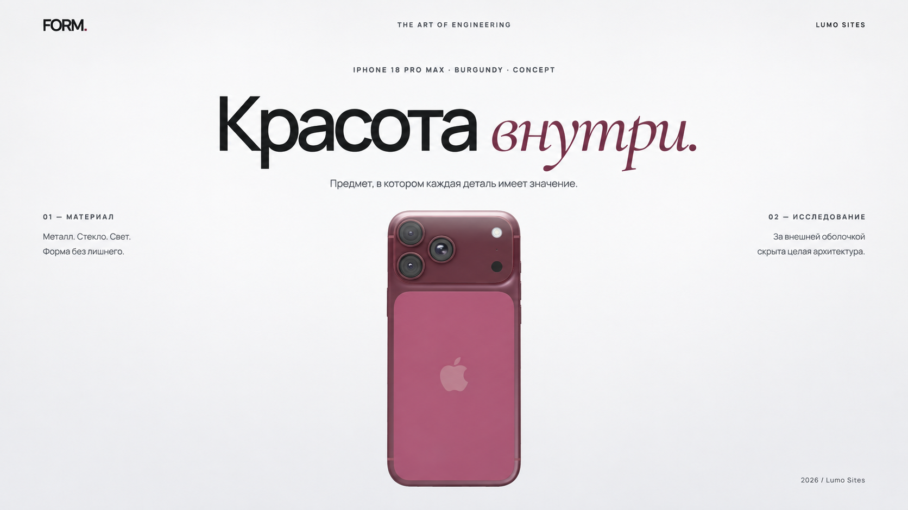

FORM / iPhone
Интерактивная презентация устройства с вращением и разборкой 3D-модели.

О проекте
Задача,
дизайн и реализация.
Задача
Показать устройство не обычной фотографией, а интерактивной сценой, в которой можно рассмотреть корпус, материалы и внутреннюю конструкцию. Проект исследует возможности продуктовой веб-презентации.
Решение
Встроил объёмную модель устройства и связал её движение с прокруткой. Реализовал вращение, последовательное раскрытие деталей и возвращение к собранному состоянию; интерфейс подстраивается под размер экрана.
Интерфейс проекта

Функциональность
и детали проекта.
- 3D модель
Объёмная концептуальная модель устройства.
- Поворот жестом
Управление ракурсом мышью и жестами.
- Анимация по скроллу
Последовательная анимация по прокрутке.
- Разборка устройства
Визуализация внутренних элементов и сборки.
Авторский демонстрационный проект для исследования дизайна и интерактивных интерфейсов.